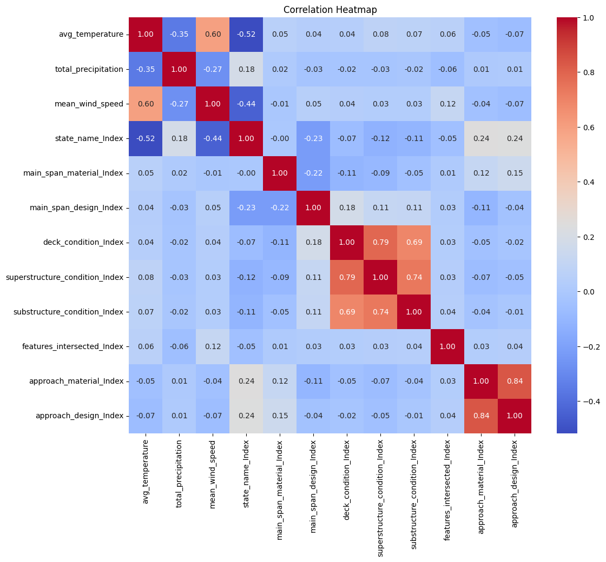

Optimizing Bridge Longevity Through Structural and Environmental Data Analysis
1 Understanding the Problem: Challenges in Bridge Longevity
Bridges are more than just structures—they are critical connectors, enabling transportation and economic growth. However, over time, they face significant challenges:
1. Aging Materials: Decades of use degrade structural components, reducing their reliability.
2. High Traffic Loads: Increased vehicular loads, especially in urban areas, accelerate wear and tear.
3. Environmental Stress: Exposure to elements such as water, wind, and temperature fluctuations corrodes vital components.
1.0.1 The Objective
This project aimed to uncover the factors contributing to bridge deterioration and predict their conditions using advanced data analytics and machine learning. By combining a robust dataset with cutting-edge algorithms, we sought to provide actionable insights to enhance maintenance strategies and improve the design of future infrastructure.
2 The Dataset: A Treasure Trove of Information
The foundation of our project was the InfoBridge database, which houses detailed records on 13,331 bridges built after 1970. The dataset included: - Structural Ratings: Condition scores for decks, superstructures, and substructures. - Traffic Data: Average daily traffic, revealing usage intensity. - Environmental Data: Geographic details, including proximity to rivers, creeks, and other natural elements.
2.0.1 Challenges in the Dataset
- Missing Data: Some fields, such as environmental ratings, had missing values.
- Imbalanced Features: Many bridges were in good condition, creating a class imbalance.
- High Dimensionality: Features like bridge design and material added complexity to the dataset.
3 The Process: From Data to Insights
3.1 Step 1: Data Preprocessing
Before delving into analytics, we cleaned and transformed the raw data:
1. Handling Missing Values: Missing fields were imputed with median values to maintain consistency and avoid skewing results.
2. Scaling and Normalization: Continuous features such as traffic volume were scaled to ensure all data was on a comparable scale.
3. One-Hot Encoding: Categorical variables, such as material type, were converted into binary vectors for model compatibility.
3.2 Step 2: Exploratory Data Analysis (EDA)
EDA was critical in understanding the dataset’s structure and identifying key trends: - Traffic Analysis: High-traffic bridges showed significant wear, particularly in urban regions. - Age Trends: Older bridges exhibited higher deterioration rates. - Environmental Impact: Proximity to water bodies correlated strongly with substructure damage.

3.3 Step 3: Model Selection and Training
3.3.1 Machine Learning Models
To predict bridge conditions, we trained three machine learning models:
1. Random Forest Classifier: Achieved 93% accuracy, excelling in feature importance and handling non-linear relationships.
2. Decision Tree Classifier: Delivered 90% accuracy, with straightforward interpretability and lower computational cost.
3. Logistic Regression: Provided 71% accuracy, limited by its linear nature but offering baseline insights.
3.3.2 Training and Validation
- Training Data: 80% of the dataset was used for training.
- Validation Data: 20% of the dataset was held out for testing.
- Cross-Validation: We employed 5-fold cross-validation to ensure model robustness.
4 System Architecture: A Seamless Integration of Tools
Our system architecture brought together multiple technologies to manage data, build models, and visualize insights:
1. Data Ingestion: PySpark was used to preprocess and clean the large dataset efficiently.
2. Data Storage: Databricks DBFS provided a scalable storage solution, ensuring accessibility and reliability.
3. Machine Learning Framework: Spark MLlib enabled the implementation of Random Forest, Decision Tree, and Logistic Regression models.
4. Visualization: Plotly was used to create geospatial visualizations, allowing us to explore data trends interactively.

5 Results: Insights That Bridge the Gap
5.0.1 Traffic Volume: The Unsung Stressor
Bridges with higher traffic volumes showed faster rates of deterioration, particularly in urban and industrial zones. The data underscored the need for robust designs to withstand modern traffic demands.
5.0.2 Structural Aging: A Call for Intervention
Bridges built before 1980 were more likely to show signs of significant deterioration. Retrofitting these aging structures is critical for ensuring their continued safety and usability.
5.0.3 Environmental Exposure: Nature’s Toll
Bridges near water bodies were at higher risk of corrosion and substructure damage. This finding highlights the importance of using corrosion-resistant materials in environmentally sensitive areas.
6 Visualizing the Insights
6.0.1 Traffic Volume Trends Over Time

7 Discussion: Turning Data Into Action
7.1 Challenges and Limitations
- Class Imbalance: A significant portion of the dataset consisted of well-maintained bridges, which overshadowed the smaller sample of deteriorating structures. This imbalance required careful consideration during model training to avoid biased predictions.
- Data Quality: Missing values and inconsistencies in the dataset presented challenges, necessitating rigorous preprocessing techniques to maintain accuracy and reliability.
7.2 Practical Applications
- Maintenance Prioritization: By leveraging predictive models, infrastructure agencies can identify high-risk bridges and allocate resources to maintain their safety and functionality.
- Optimized Design Strategies: Insights into the factors affecting bridge health—such as traffic volume and environmental conditions—can inform the construction of resilient bridges, particularly in high-risk areas.
8 Conclusion: Building Bridges That Last
8.1 Summary of Findings
This study highlights the transformative power of big data and machine learning in addressing infrastructure challenges. By identifying critical predictors such as deck condition, traffic volume, and environmental exposure, we provided a roadmap for proactive bridge maintenance and design optimization.
8.1.1 Key Takeaways
- Random Forest was the most effective model, achieving 93% accuracy, with feature importance rankings that emphasized deck condition and traffic volume as the strongest predictors.

- Bridges built before 1980 require immediate attention due to their advanced deterioration, highlighting the need for retrofitting and modernization.
8.2 Looking Ahead
The journey to optimizing bridge longevity doesn’t end here. Future work could include: 1. Integrating real-time sensor data for continuous monitoring and early warning systems. 2. Exploring advanced algorithms such as Gradient Boosting and Neural Networks to further improve prediction accuracy. 3. Expanding the dataset to include weather patterns, regional traffic forecasts, and material-specific details for a more comprehensive analysis.
By incorporating these improvements, infrastructure agencies can ensure that bridges remain safe, functional, and resilient for generations to come.
9 References
- Federal Highway Administration. National Bridge Inventory (NBI) data. InfoBridge.
- Breiman, L. (2001). Random Forests. Machine Learning, 45(1), 5-32.
- Géron, A. (2019). Hands-On Machine Learning with Scikit-Learn, Keras, and TensorFlow (2nd edition). O’Reilly Media.
- Databricks. Databricks Platform.
- Apache Software Foundation. (2024). Apache PySpark (Version 3.4.0). Apache Spark.
- Python Software Foundation. (2024). Python Programming Language (Version 3.9.0). Python.org.